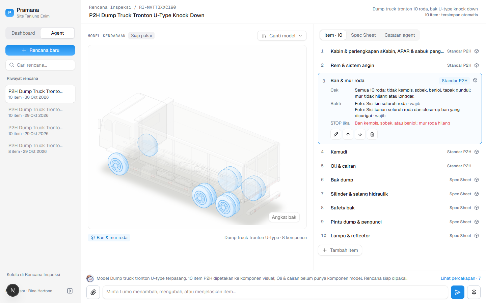

Pre-operational inspection
Complete reports.
Less follow-up
Pramana guides field operators to collect complete evidence, so supervisors can focus on review and action.
Field report→Evidence→Work Order

UI reference · design/screens
Lumo connects reporting to follow-up.